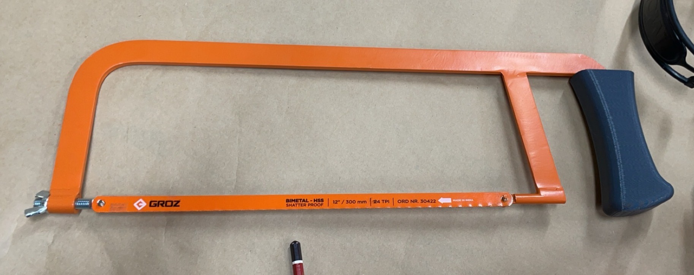
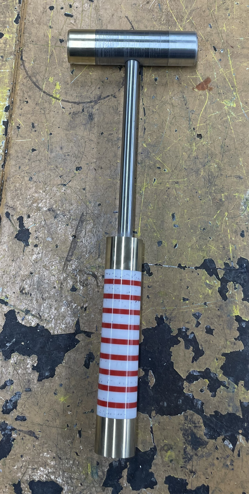
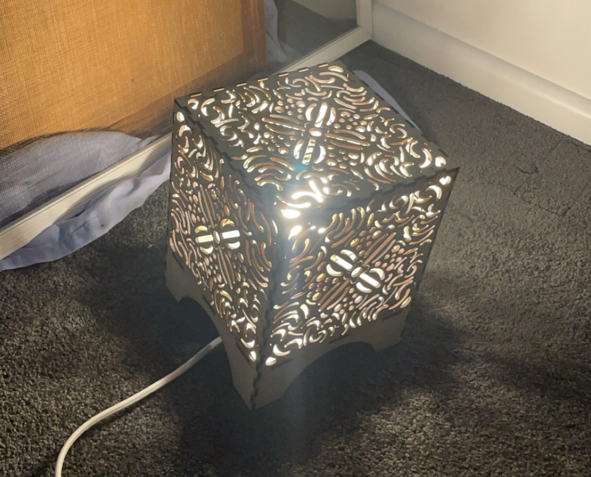
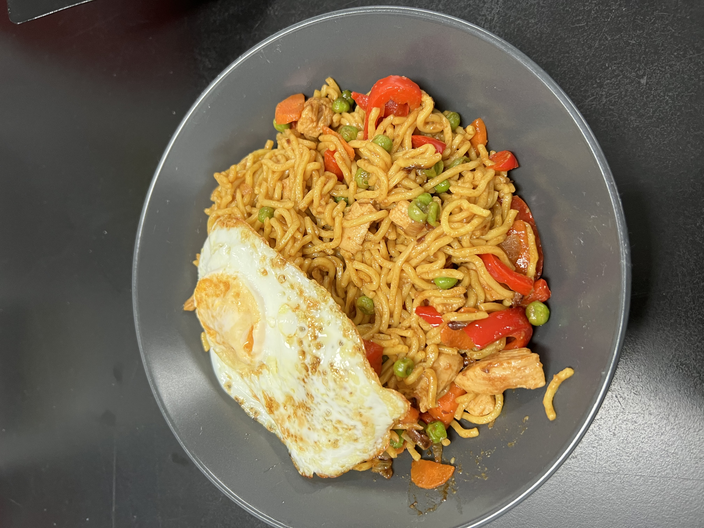
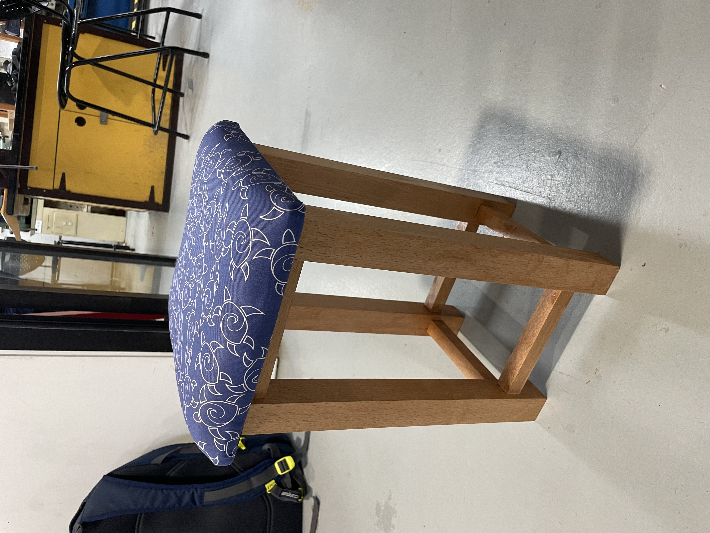

TECH206 - Design in Metal
Construction of a Hacksaw with 3D Printed handle

TECH206 - Design in Metal
Construction of a Hammer with different materials

TECH104 - Design in Timber
Construction of a Lamp with using a Laser cutter

TECH210 - Food and Nutriton
Cooking of Noodles with different healthy ingredients

TECH104 - Design in Timber
Construction of an Upholstered Stool with different materials

TECH104 - Design in Timber
Construction of a Veneer box with different wood/tiber materials